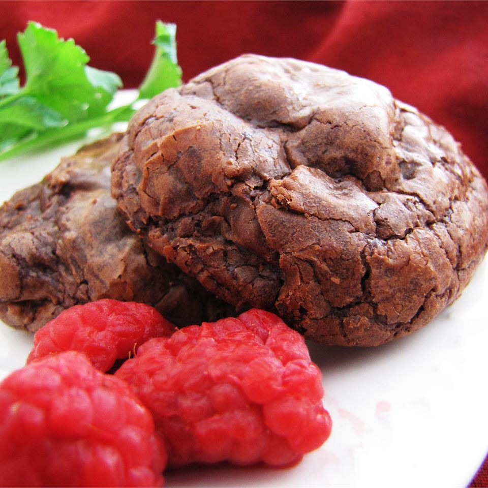

Chocolate Truffle Cookies

Description
A very dark, rich chocolate cookie for the true chocoholic. This recipe uses relatively little flour, resulting
in dense, fudge-like cookies. These cookies keep well in the freezer (but you may have a hard time waiting for
them to thaw before you eat them).
Ingredients
- 4 (1 ounce) squares unsweetened chocolate, chopped
- 1 cup semisweet chocolate chips
- 6 tablespoons butter
- 3 eggs
- 1 cup white sugar
- 1½ teaspoons vanilla extract
- ½ cup all-purpose flour
- 2 tablespoons unsweetened cocoa powder
- ¼ teaspoon baking powder
- ¼ teaspoon salt
- 1 cup semisweet chocolate chips
Steps
- In the microwave or in a metal bowl over a pan of simmering water, melt unsweetened chocolate, 1 cup of the
chocolate chips, and the butter stirring occasionally until smooth. Remove from heat and set aside to cool.
In a large bowl, whip eggs and sugar until thick and pale, about 2 minutes. Stir in the vanilla and the
chocolate mixture until well mixed. Combine the flour, cocoa, baking powder and salt; gradually stir into
the chocolate mixture. Fold in remaining 1 cup chocolate chips. Cover dough and chill for at least an hour
or overnight.
- Preheat oven to 350 degrees F (175 degrees C). Roll chilled dough into 1 inch balls. Place on ungreased
cookie sheets so they are 2 inches apart.
- Bake for 9 to 11 minutes in the preheated oven. Allow cookies to cool on baking sheet for 5 minutes before
removing to a wire rack to cool completely.